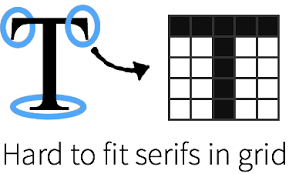

BACK
The difference between serif and a san-serif fonts
A Serif font has “feet” or added extensions like the top and bottom
of the Times New Roman serif font.
while
Since the word “sans” (in French) means without,
sans serif is without the serifs or “feet
Examples of both
